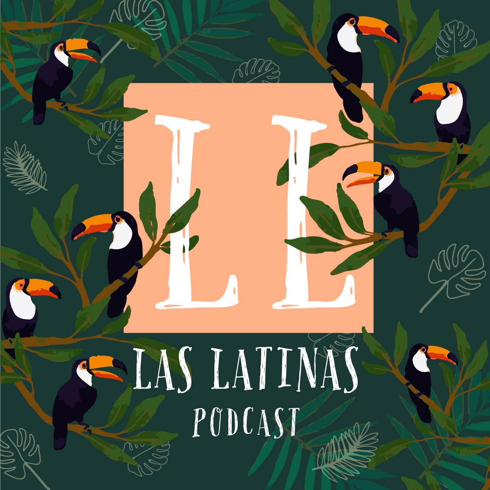

Las Latinas Artwork
Las latinas podcast is a podcast from two Latin friends studying NMPD at Sait College interviewed students to find out about their experiences and points of view about the course and university life. My goal was to create artwork that effectively conveys the vibrant and relative tone of nature and I used the toucan to represents the students. I used bold and colorful illustrations to represent the energy and enthusiasm of two Latin friends on a creative journey. Overall, my artwork would capture the essence of Las Latinas Podcast, inviting listeners to join in on an inspiring and insightful exploration of NMPD studies life through the eyes of passionate Latin creatives.